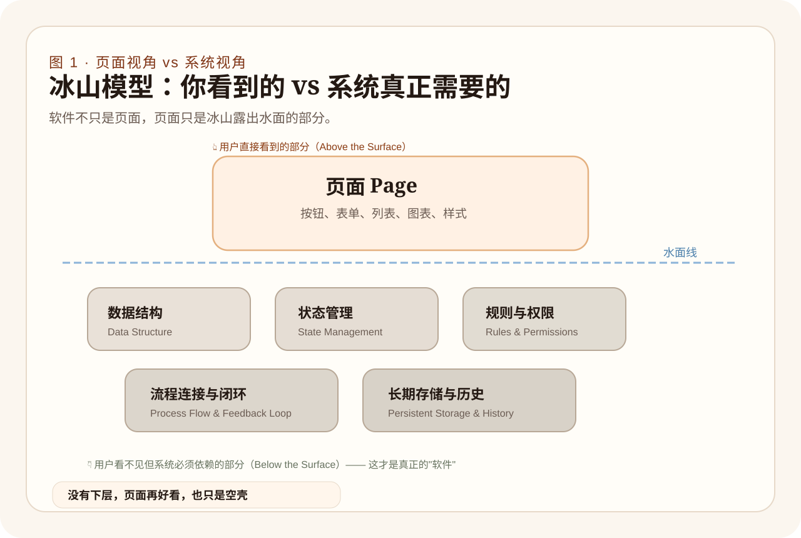

Chapter Guide
这一章的关键任务
把“软件是页面”这层浅显的认知，跨越式地升维成“软件是对现实问题的一种可运行的数字组织方式”。
03
软件到底是什么？
很多初学者对软件的第一印象，是一个手机上的 App 弹窗、一个五颜六色的网站排版、一套好看的侧边栏按钮。这些外在表现当然是软件的一环，但它们只看到了冰山上露出的最末端的“像素”。
更本质地说：软件，是把现实世界中杂乱无章的目标、流动的规则、业务的流转状态，以及信息的生命周期，变成一套可以严丝合缝地、以极低出错率稳定计算和运行的数字沙盘。
以一个大家都很熟悉的例子来说：一个电商购物软件，绝不只是几张商品的瀑布流照片加上一个购物车界面的加减按钮。它的水面之下隐藏着庞大的运作齿轮：
- 接收与校验： 你点下“结算”，它要核查你的账号权限、验证库存是否真的充足、计算红包与满减规则是否可以叠加。
- 状态流转： 生成“待支付”的凭证并上锁商品库存，如果你 15 分钟不付款，它要准确无误地取消订单并归还库存。
- 分发与日志： 支付成功后将指令拆分给第三方支付平台、物流系统以及发票系统，将每一次数据变动原原本本地锁紧在历史留存档案中。
你看，软件的命脉绝不在于“页面长什么样”，而在于“系统如何用逻辑组织现实流程”。
当你想通了这一点，你对待软件的关注点就会发生根本性的逆转。你不会再在起步阶段去纠结“按钮应该有多少像素的圆角”，你会去问那些最核心的架构性问题：
- 系统的核心输入参数（Input Params）是什么？它从哪里产生？
- 这些数据要经历怎样的转换规则（Rules & Validations）？
- 操作过程中会有什么生命周期节点（Lifecycle States）？比如是进行中、成功、还是失败？
- 这套系统最终要持久化沉淀（Persistence）出什么样的数据价值去反乳现实？
对于 LifeOnline 来说，我们在最开始规划阶段关心的永远不是它的 Web 控制面板用什么颜色。我们关心的是：用户的思考与笔记怎样被精准地收集为 EventNode，系统分析后该产生什么样的 `pending`（待审批）的灵魂动作（SoulAction），只有梳理清晰这些数据实体的脉络，前端页面的渲染只是水到渠成的一句画皮罢了。
本章小结
软件不是“界面的堆砌物”，它是将现实的业务问题抽象为可处理对象的流水线。只有理解这一点，你才能在未来指挥 AI 时问出真正对系统架构有帮助的好问题。
图 1
冰山模型：页面视角 vs 系统视角
